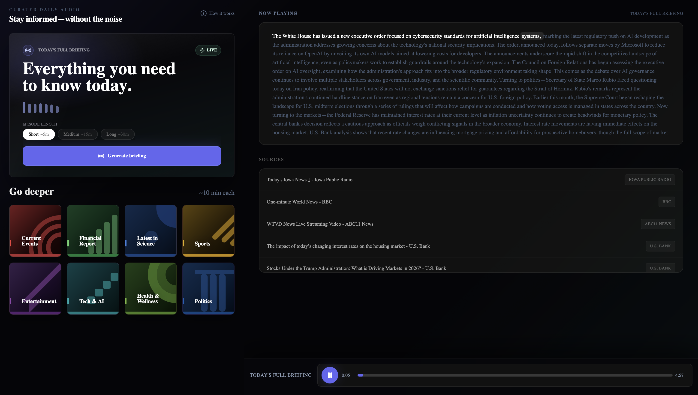
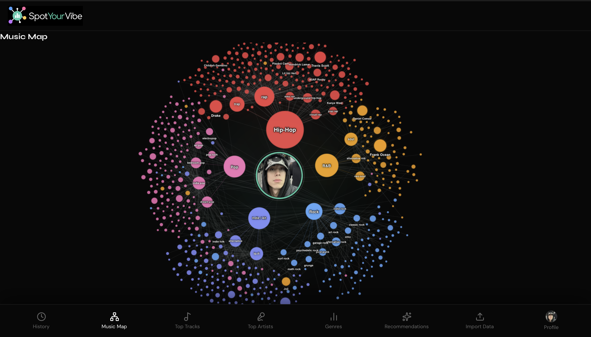
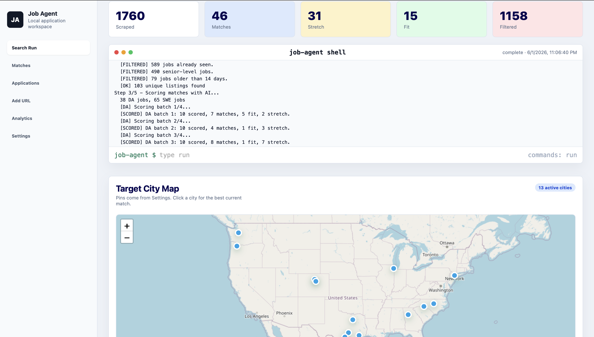
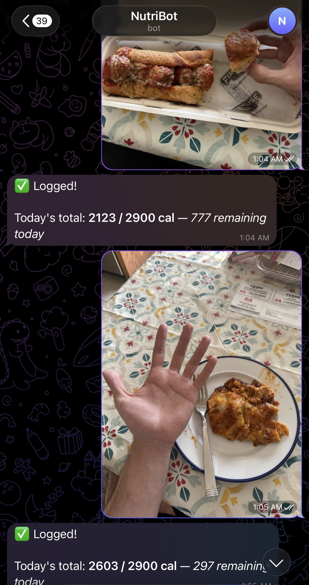
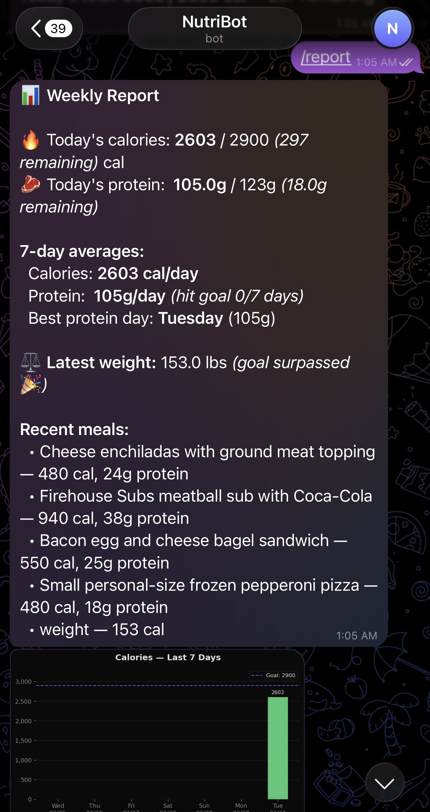
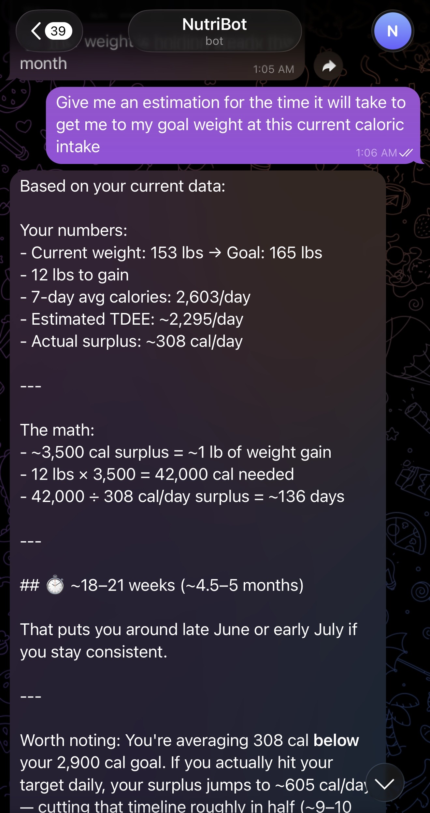

I'm a tech enthusiast.
Software Data BS Computer Science MS Computational Analytics
00 — About
I build practical AI and data products: autonomous agents, analytics dashboards, API-backed apps, and tools that turn messy workflows into something usable.
Education
Credentials: Google Data Analytics Professional Certificate, Git Essential Training
Languages
Technologies & Tools
Frameworks & Libraries
Concepts
MS Computational Analytics candidate at Georgia Tech and BS Computer Science graduate from Georgia State, Cum Laude. Currently working in data operations at Shiplify, producing ground truth labels for an active learning pipeline and performing geospatial QA as a senior-tier reviewer on a platform processing 500M+ shipments.
Recent solo work includes a local AI job-search workspace, a news-to-podcast generator, a Spotify listening intelligence app, and a Telegram nutrition tracker powered by Claude Vision. I like projects where the data layer, model behavior, and product interface all have to work together.
Currently targeting Data Engineering, Data Analyst, and Software Engineering roles.
01 — Work

Short, listenable news briefings generated from live articles, structured by Claude, and converted into audio with OpenAI text-to-speech.

Music intelligence app that turns Spotify listening history into dashboards, genre analysis, and an interactive taste graph.

Autonomous local workspace that searches job boards, scores listings against my resume, tracks applications, and sends daily reports.



Telegram nutrition tracker that turns meal photos into structured calories, macros, progress reports, and coaching-style answers.
02 — Outside the Code
Started playing at 5 and didn't stop until I was 20 — rec leagues, competitive teams, intramural. It shaped a huge part of who I am and some of my closest friendships came from it. I'm a huge USMNT fan, and grew up a Cristiano Ronaldo fanboy, still forever my goat.
Always something playing — workouts, studying, driving, just existing. Over 150,000 minutes on Spotify last year. At this point it's less of a hobby and more just the background to being alive. I love finding new songs and artists that match a playlist or mood perfectly and is something that I'm always looking out for.
SpotifyWatched two movies a night for a big stretch of college with my roommates. That habit turned into a real appreciation for how different cultures, time periods, and genres get expressed through film. Big fan of horror — Hereditary is my favorite — and I have a soft spot for coming-of-age films.
Find me on LetterboxdWhat hooked me is how it blends physical and mental problem solving — every route is basically a puzzle, and some of them take multiple sessions to crack. There's something satisfying about coming back to a problem and finally sticking it. The community makes it even better, everyone's rooting for each other.
Working remote means I'm inside a lot, so getting outside is essential. I try to find a good trail or summit to clear my head with my dog Charlie — he's more into it than I am most days. There's something about being in nature that gives you a sense of peace that nothing else does. Touching grass, as they say.
There are places you just can't replicate from a phone screen. The Philippines is my all-time favorite, with Paris and Rome close behind. The food, the history, the architecture — the kind of thing you have to be there for.
03 — Contact